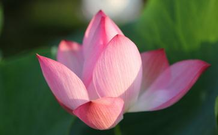

我们一家人都
旧金山湾区气候温和，一年四季昆虫活跃。这里的民居绝大部分是木结构平房和二层楼，屋里难免有蜘蛛、蟋蟀、苍蝇、蚊子和蚂蚁等光顾。商店里出售着五花八门的杀虫剂。在女儿带动下，我们家不用杀虫剂，努力做到和这类小旁生和平共处：在客厅和卧室里，有蜘蛛就用手轻轻把它们捡到屋外。墙上的苍蝇、蚊子，则先用透明的塑料杯扣住它们，再将硬纸片插入杯墙缝隙中当作杯盖，把它们移出去。淋浴前，把澡盆里的蚂蚁用软毛刷移到池外，以免它们被水冲走。这些小动物也有灵性，当蚂蚁在卫生间找不到食物，它们也就不光顾了。
放生习惯在北京读大学和研究生阶段，女儿就养成放生的习惯。来美国后，她犮觉这里很难找到放生水域。若把活鱼放到河里，常遭美国人阻止。后来了解到二百多公里外有个佛寺常有放生义举，她就定期把支票寄到寺院，以资助购买放生动物。但不久又接到寺里的信，说放生项目已改为护生，看来他们在放生上也遇到困难。从网上看到大陆的同修由法师率领，一次就买几十万元的鱼虾，由十多辆卡车运送，浩浩荡荡到江河、水库放生的消息，她都感叹大陆同修福报真大。在他们网络学佛小组会上，有师兄说，他到沃尔玛的渔具部买用作钓饵的蚯蚓，放在自家园子里，表示自己也参加了放生。女儿想做更有意义的放生。在超级市场里，不忍心看到活鱼被宰杀、开膛、刮鳞，砍下头的嘴还在不停闭合的惨状，她总想尽自己力所能及，解救它们的生命。
在南湾住时，我们家附近小区活动中心有一个八九亩大小的人工湖，湖水不和任何活水相通，只有人工喷泉给水注入空气，湖里有乌龟和鱼活动，这可是个适合放生的地方。为了避免有人阻挠，我们傍晚去市场买鱼，回到家里做完
搬家到东湾后，女儿仍保持每月两次买活鱼放生的习惯。但也遇到有人不理解的情形，有一次在超级市场里，一位白人长者得知我们买鱼放生后对女儿说：“谢谢你，由于你给鱼虾放生，我买的活鱼虾味道更鲜美了。”他甚至不礼貌地问我的年龄，女儿如实告知后，他更得意地说：“我今年七十八岁了，看起来比你吃素的爸还年轻，就是因为吃鱼多。”大庭广众的超市，显然不是给这位老人讲
也有理解我们放生行动的人。我们起初放生鱼的水面是市中央公园的伊丽莎白湖。湖面虽宽阔，但设有市府规定的垂钓区，有三四位退休的亚裔老人整天在此钓鱼。我们当然不希望自己放生的鱼再被他们钓去，但又找不到更合适的地方。有一次买鱼时遇到一位中国人，他告诉女儿：“沃龙勒学院有个池塘是禁止捕鱼的，你们可以到那里放生。”
第一次到这个小区学院放生时，是个傍晚。池塘约一千多平米，池边确有“禁止游泳及钓鱼”的告示。可能有人报告池边有人提着水桶，校警很快开着警车来问我们干什么。告诉他我们是来放生而非钓鱼后，他又捡查了我们的空桶，礼貌地告退。我们就这样在新家附近找到合适的放生场所。
拒绝卖活鱼的售货员 几个月后又遇到麻烦，超市海鲜部的售货员拒绝卖活鱼给女儿，说他们的经理讲，州政府有法令，不得在湖泊和河水里放生。但他并不清楚法令的具体内容，也未说不可买海鲜放生，女儿就想在旧金山湾里放海鲜。在海边寻找放生的场所很困难，我们能走近的海岸几乎都是州或县市的湿地公园，公园入口都有“不得把青蛙和宠物丢弃在湿地或水中”的告示。总算在离家二十多里的地方找到一个礁石海岸，没有禁止“丢弃”动物的标牌。买活海鲜很花钱，以替我们省钱为理由，售货员卖给女儿一只价值三十五美元但少一个螯的活龙虾。女儿又买了十多只活海蚌。带着活海鲜开车到海岸边，才
也许是默认我们的善举，超市的海鲜售货员又答应卖活淡水活鱼给我们了。虽然“州政府规定，把活鱼、龟、蛙、蟹放入公共水域是非法的”，但是，我们的理由也充分：校园里的湖不属于公共水域，小区学院校警也并未阻止我们放生。我们仍旧在傍晚湖边人不多时放生，每月两次。到现在为止，已安全、顺利放生近一年了。
离开生物制药行业 三个月前，女儿工作的药物研发公司，因效益不彰，解雇了部分员工，女儿也在被辞退之列。她对此非但不遗憾，还很高兴。她说，每探索一种新药，她们实验室里不知要残害多少无辜的小白兔和老鼠。虽然不亲手做动物实验，但她制作出的中间产品，很多都是注射到这些小动物身上的，它们绝大多数很快就死了。虽每天都为这些可怜的旁生
她说，她师父教导，放生具足
在欧美澳洲，提倡素食、致力于拯救珍稀动物的团体很多。他们的宗旨大多是从保护自然生态、挽救濒危物种及高尚的人类对比自己低级的动物应有慈善心出发的，他们没有
女儿坚信，以自己放生和学佛的其他实际行动为因，今生必能得到好的果报，找到一个自己喜爱的工作，能有